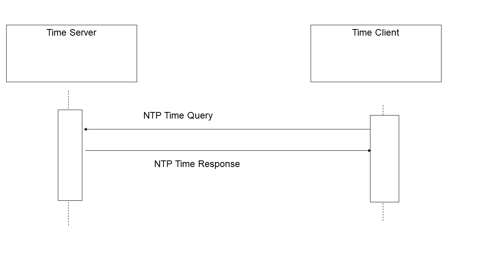

3.1 Maintain Time [ITI-1]
This section corresponds to transaction [ITI-1] of the IHE IT Infrastructure Technical Framework. Transaction [ITI-1] is used by the Time Server and Time Client Actors.
3.1.1 Scope
This transaction is used to synchronize time among multiple systems.
3.1.2 Use Case Roles
Actor: Time Server
Role: Responds to NTP time service queries.
Actor: Time Client
Role: Uses NTP or SNTP time service responses to maintain synchronization with Time Servers and maintain the local system clock.
3.1.3 Referenced Standard
NTP Network Time Protocol Version 3. RFC1305
SNTP Simple Network Time Protocol (SNTP) RFC4330
3.1.4 Messages
Figure 3.1.4-1: Maintain Time Messages
3.1.4.1 Maintain Time
The NTP transactions are described in detail in RFC1305. There is also extensive documentation on the transactions and recommendations on configurations and setup provided at http://www.ntp.org . Rather than reproduce all of that material as part of this Framework, readers are strongly encouraged to explore that site. The most common mode is the query-response mode that is described below. For other forms, see RFC1305 and the material on http://www.ntp.org .
The Time Server shall support NTP (which implicitly means that SNTP clients are also supported). Secure NTP may also be supported. The Time Client shall utilize NTP when it is grouped with a Time Server. For ungrouped Time Clients with 1 second accuracy requirements, SNTP may be useable. Time Clients may also support Secure NTP.
Table 3.1.4-1: Permissible Protocol Selections
| Protocol | Time Server | Time Client grouped with a Time Server | Time Client (1s accuracy) | Time Client (High accuracy) |
| SNTP | Must Support | Prohibited | Permitted | Prohibited |
| NTP | Must Support | Must Support | Permitted | Permitted |
| Secure NTP | Optional | Optional | Optional | Optional |
3.1.4.1.1 Trigger Events
In a query-response mode the Time Client queries the Time Server and receives a response. This transaction includes timing estimation of network delays.
3.1.4.1.2 Message Semantics
The Time Client uses the Network Time Protocol (NTP) to synchronize its time with the Time Server. NTP clients can be configured to use a specific NTP server at a specific IP address, to obtain the NTP server address automatically from DHCP, and/or to discover the NTP server address automatically. Time clients shall support at least manual configuration and may support all three modes. Time Clients usually maintain time synchronization by adjusting the system clock, so that applications continue to use the system clock facilities. The specific precision of synchronization depends upon the requirements of specific actors.
Implementations must support a time synchronization accuracy with a median error of less than one second.
There is a Simple Network Time Protocol (SNTP) RFC4330 defined that can provide one second accuracy for Time Clients. It uses the exact same protocol as NTP, but does not include the measurement data used by the NTP high-accuracy statistical estimation algorithm. It has a lower implementation cost because it omits the measurements and statistical estimation needed to achieve higher accuracy. This omission of the statistical estimation makes it unsuitable for use when grouped with a Time Server. Its use is permitted for Time Clients that are not grouped with a Time Server.
Note:
1. The Time Client can often be implemented by using components provided by operating systems. Some offer only SNTP while others offer the choice of SNTP or NTP clients.
2. SNTP may achieve better than 1 second synchronization when combined with careful hardware, software, and custom network design. This network design will include restrictions on cabling design, hubs, routers, etc. that are outside the scope of the CT Profile and not verifiable except on a site by site basis.
The use of Secure NTP is not required. The risk of subversion of the time base to conceal penetration is considered very low, and the operational costs of maintaining Secure NTP too high in most environments.
3.1.4.1.3 Expected Actions
The Time Server and Time Client will maintain synchronization to UTC. The Time Client maintains a statistical estimation process utilizing time estimates and network delay estimates from one or more Time Servers. This statistical estimation process yields a time estimate that is used to continually adjust the system clock.
Note: The relationship between the local reported time, UTC, and battery-backed clock is often a source of confusion. Different hardware and operating systems have different configuration requirements. These should be clearly documented and made clear in the user interface so that field service and operational staff do not introduce errors.